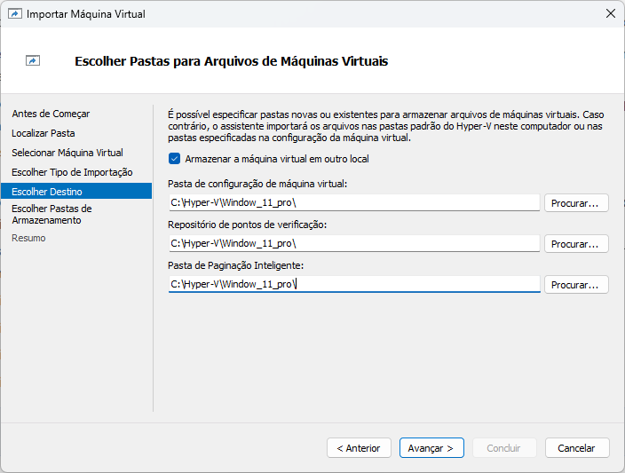
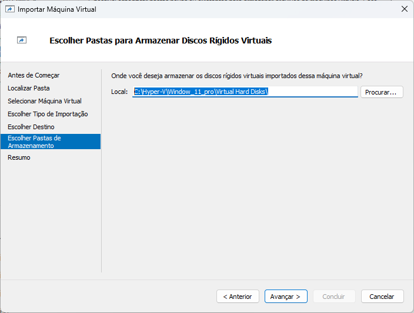

Pré-Requisitos
Passos necessários para garantir a execução do procedimentoEsses requisitos são necessários para que possa ser realizado o procedimento de importar a máquina virtual pelo gerenciador do Hyper-V.
- Executar o procedimento para otimizar o armazenamento da máquina virtual Manutenção e Otimização de Armazenamento
Exportar Máquina Virtual
Exportar VM conforme funcionalidade do gerenciadorEstes passo garante que a máquina virtual seja exportada de modo a não corromper arquivos.
- No Gerenciador do Hyper-V, Pressionar com o botão direito sobre a máquina virtual que será exportada e selecionar a opção Exportar..
- Especifique o local onde se deseja salvar os arquivos selecionando a opção Procurar
- Após selecionar o local selcione a opção Exportar, acompanhe o processo terminar na coluna Status da máquina virtual.
- Depois de finalizado o processo de exportar, compactar a pasta gerada e armazenar o arquivo compactado, a pasta sem estar compactada pode ser excluída. O processo de compactação diminuí consideravelmente o tamanho da pasta!
Importar Máquina Virtual
Importar VM conforme funcionalidade do gerenciadorO procedimento garante que a máquina virtual seja criada com base em um cópia e não corrompa nenhum arquivo.
- No gerenciador do Hyper-V selecionar Ações > Importar Máquina Virtual, na primeira tela que aparecer
Antes de Começar pressionar em Avançar - Na opção Localizar Pasta pressionar em Procurar... e selecionar a pasta de uma máquina virtual que foi exportada pelo gerenciador.
Obs: Não pode ser a pasta compactada, é preciso descompactar antes! - Após selecionar a pasta pressionar em
Avançar e vai aparecer o nome da máquina virtual já selecionada na opção Selecionar Máquina Virtual, pressionar em Avançar >. - Na opção Escolher Tipo de Importação selecionar a opção Copiar a máquina virtual (criar uma nova ID exclusiva) e pressionar em Avançar >.
- Em Escolher Destino selecionar a opção Armazenar a máquina virtual em outro local, e preencher com o mesmo caminho os três campos de diretório, exemplo: C:\Hyper-V\Window_11_pro\. E pressionar em Avançar >
- Em Escolher Pastas de Armazenamento colocar o mesmo diretório escolhido no passo anterior e definir o nome da pasta padrão para o disco da máquina virtua, exemplo:C:\Hyper-V\Window_11_pro\Virtual Hard Disks\. E pressionar em Avançar >
- Verificar o resumo e pressionar em Concluir. Aguardar o gerenciador finalizar a importação.
- text_list
- text_list


box_codeTeste e Validação
Opcional- No gerenciador do Hyper-V pressionar como botão direito do mouse sobre a máquina virtual que foi importada e selecionar Conectar > Iniciar, esperar o sistema inicializar e testar a nova VM.